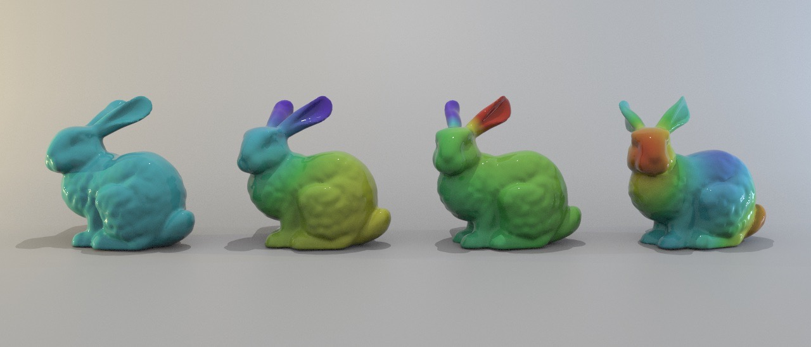

Audiovisual Simulation
Acoustic Simulation for Complex Geometries
Below is an image of four of the harmonic modes of the Stanford
bunny. From left to right, I've plotted the \(0^{th}\), \(1^{st}\), \(2^{nd}\), and \(6^{th}\) modes. I computed the
displacement \(u\) of each mode by numerically solving the Helmholtz equation, \( \Delta u = -k^2 u \), at every vertex on
the triangulated surface. The purple portions represent regions where the displacement is maximally negative, and the red portions
represent where it is maximally positive. In discrete exterior calculus,
the Helmholtz equation takes the form
$$(d^T \star_1 d) u = k^2 \star_0 u $$
where \(d^T \star_1 d\) is the discrete Laplacian, \(\star_0\) is the mass matrix, and \(k\) is the wave number of the harmonic mode. Here,
\(d\) is a sparse matrix defined using the source and destination of each half edge on the mesh, \(\star_1\)
is a sparse diagonal matrix whose non-zero values are the half edge weights, and \(\star_0\) is a sparse diagonal matrix
whose non-zero values are the vertex weights. The computation was performed using VEX and Python, and the
graphics were rendered using Houdini. Note: if the bunnies were replaced by spheres, the
eigenvectors \(u\) would be the corresponding real spherical harmonics.

Sound Synthesis for Computer Animation
The images, motion, and sounds of the animation below
were generated entirely by a computer. The images were computed at 60 Hz, the motion was computed at 240 Hz, and the
sounds were computed at 48000 Hz. Each sound event consisted of a pure tone modified by an attack-decay-release (ASR)
volume envelope. From left to right in the animation, the spheres played frequencies of 220 Hz, 440 Hz, and 880 Hz. Following the main computation,
the audio and video were automatically combined using FFmpeg. The computation was performed using C++, and the
graphics were rendered using OpenGL. The main computation took the following general form:
for (int i = 0; i < 60; i++) {
// render images of falling spheres at 60 Hz
for (int j = 0; j < 4; j++) {
// update sphere motion at 60 \(\times\) 4 = 240 Hz
for (int k = 0; k < numberOfSpheres; k++) {
// advance position of each sphere using forward Euler method
// initialize new sound event if sphere collides with floor
for (int w = 0; w < 200; w++) {
// compute audio samples for each sound event at 60 \(\times\) 4 \(\times\) 200 = 48000 Hz
}
}
}
}